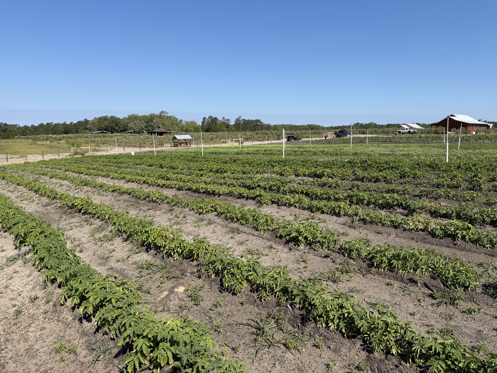

Updates from the garden
From the Field.
Notes from the pilot, posted monthly. New entries land at the top.

The Farm at Okefenokee sharing out of its abundance.

Most of the market garden was planted today!
It was a very productive day with a lot of people working on it.

Irrigation is now completed.
More to come, posted monthly